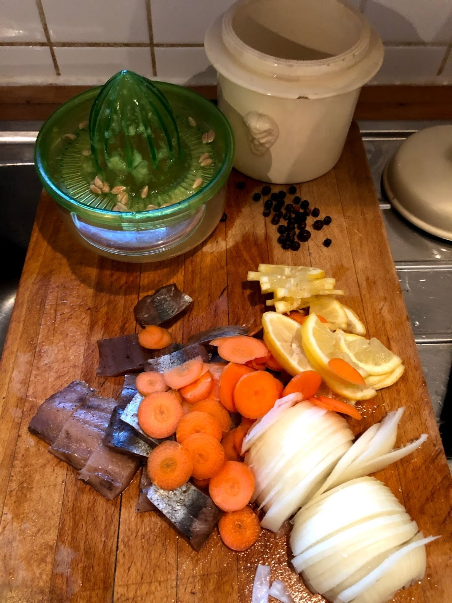
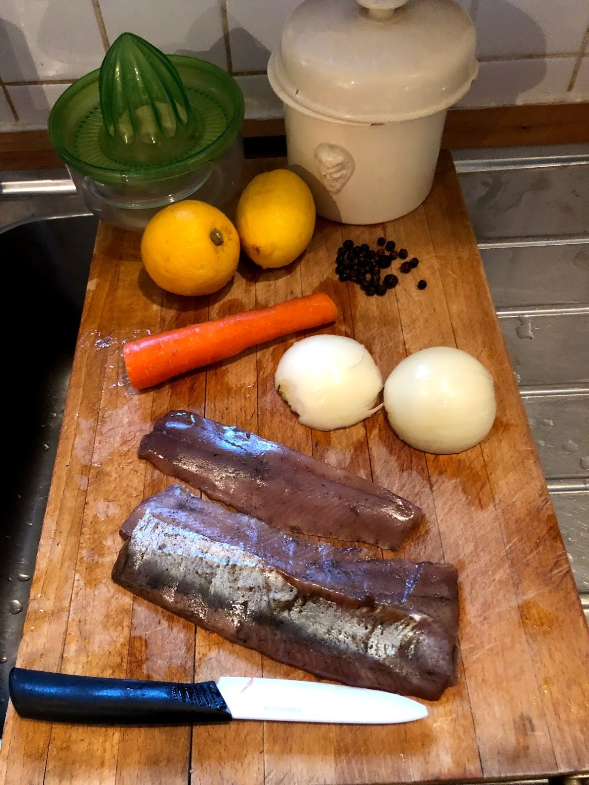

Aringhe in terrina
Introduzione e contesto

Quando ero ragazzo erano spesso presenti in casa mia. Ottimi panini con il pane imburrato...
Modifica del 20/04/2026 h 11:11
Ingredienti
| Ingrediente | Quantità | Unità | Note |
|---|---|---|---|
| Aringhe sciocche affumicate | 1 | n | confezione |
| Carote | 2 | n | |
| Cipolla | 2 | dolce | |
| Bacche di ginepro | 5 | n | |
| Limoni BIO | 2 | n | |
| Vino bianco secco | 1 | dl | |
| Olio extra vergine d'oliva |
Preparazione
Gli ingredienti devono essere freschi e profumati.


Io taglio le aringhe a pezzi di circa 2 cm. Affetto le carote, le cipolle e un limone.
Metto tutto in una terrina. Aggiungo il succo del limone restante, le bacche di ginepro e un poco di vino bianco, fino a coprire.
Verso un filo d’olio per isolare dall’ossigeno. Copro e lascio in frigorifero per alcuni giorni, il tempo che si insaporisca bene.
Servo con pane abbrustolito e leggermente imburrato.
Note e osservazioni
Indicazione di tempo presente nel testo: 15 minuti
alcuni giorni... diciamo un almeno un paio, e poi consumare un 2 o 3 giorni. Meglio